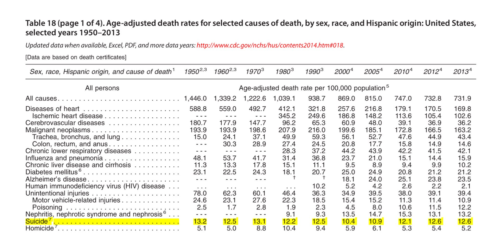

The Centers for Disease Control and Prevention (CDC) released a report in June 2018 indicating the suicide rate in the United States has risen nearly 30% since 1999. The CDC provided data on the state-level suicide rate, age-adjusted for persons ≥ 10 years old per 100,000 population. Only one state, Nevada, had a rate that decreased during this period. Note that Nevada has had a consistently high rate of suicide since 1999. I've created an interactive map, using Carto, that displays the suicide rate in each state in a graduated blue color scheme. I plan to add county-level data to the map eventually. At this time, many of the counties have statistically unreliable data.
Enlarge MapA key finding in the data is a 50% change in suicide among females from 2000 to 2016, most notably women aged 45 - 64.
Per the CDC, "The findings in this report are subject to at least three limitations. First, in the state-level analysis, rankings for four states (Maryland, Massachusetts, Rhode Island, and Utah) might have been affected by large proportions of injury deaths of undetermined intent (potentially biasing reported suicide rates downward) or decreased percentages of such deaths over time (potentially biasing estimated rate trends upward). Second, NVDRS (National Violent Death Reporting System) is not yet nationally representative; the 27 states included represent 49.6% of the population https://factfinder.census.gov/faces/tableservices/jsf/pages/productview.xhtml. Finally, abstractors of NVDRS data are limited to information contained in investigative reports. Therefore, the extent of informant knowledge can affect data completeness and accuracy." See this link for the full report.
Also of note is the table below, which contains data collected before 1999. In analyzing the data back to 1950, the suicide rate doesn't appear to have a significant change. It's interesting to see a dip in the suicide rate from 2000 to 2005.

I started this map after seeing maps presented online on the increasing suicide rate from recent CDC reports. I thought many of these maps needed interactivity and a higher level of detail. I wondered if there is something that the geospatial perspective could tell us about this issue. As I investigated, I discovered some of the weaknesses in the data. The key takeaway I've had from this project and the MAP 671 class overall is how difficult data collection can be and going back to Module 1, how maps can potentially mislead. I've gained a greater appreciation for the responsibility I have as a creator to carefully represent data using digital maps.